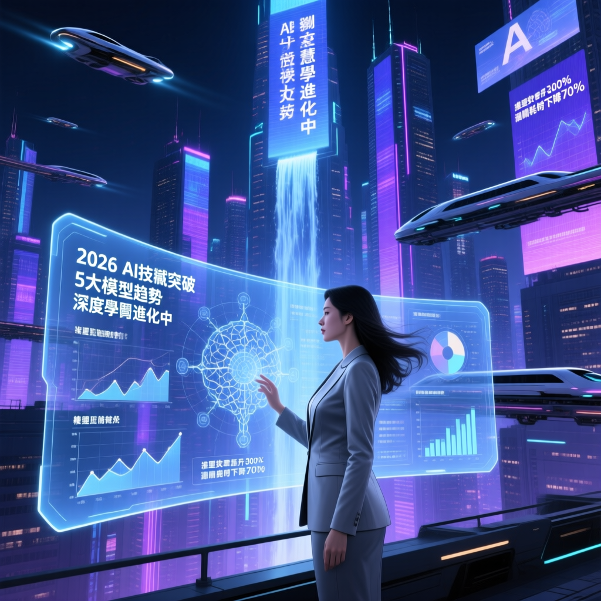

企業在 2026 年導入 AI 的策略，必須從單純的「對話式助理」轉向建立具備自主行動力的 Agentic AI。本文解析五大關鍵趨勢，揭示模型如何跨越單純對話階段，轉化為具備自主行動力的數位勞動力。

企業在 2026 年導入 AI 的策略，必須從單純的「對話式助理」轉向建立具備自主行動力的Agentic AI。許多企業主至今對 AI 的想像仍停留在研究如何寫出完美的提示詞（Prompt），試圖讓 AI 給出更好的回覆，榨取 LLM 的知識精華。然而，技術進化的速度導致了指令工時代也必須面對轉型。
EgentHub 站在企業導入 AI 的最前線，從 2026 年 Q1 各家模型的更新內容整理了 AI 模型的五大趨勢，揭示模型如何跨越單純對話階段，轉化為具備自主行動力的數位勞動力。
聰明的企業不會用大砲打小鳥——僅將重要決策或是複雜任務交給高階或旗艦模型處理，而將輕量任務過濾給微型模型，極大化營運效益。
人工智慧不再侷限於對話框，開始具備視覺理解能力並直接接管軟體介面。從瀏覽器操作與地端文件操作開始，成為功能標配。
推論架構從「反射式回答」轉向「深度思考」，算力分配進入適應性階段。模型在回答前會自主進行多路徑的假設探索與自我糾錯。
通用通訊協定解決數據孤島，讓多代理協作如同插座般具備即插即用的互通性。全球目前已部署超過 10,000 個活躍的 MCP 伺服器。
記憶模組進化解決了長文本的資訊遺忘，大幅提升檢索精準度並降低營運成本。各家的旗艦模型都已達到 1M Token 的上下文窗口。
階層化模型佈局結合高效能晶片，實現資安防護與成本控制的雙贏。微型模型成本下探至每百萬 Token 0.20 美元。
企業主管最擔心 AI 代操作時產生不可控的黑盒行為，這也是過去電腦操作能力（Computer Use Ability, CUA）難以落地的痛點。從近期模型更新的內容來看，主流模型的嘗試方向有二：
以 Google 的 Antigravity 為例，透過構件（Artifacts），Agents 在操作時會同步產出執行計畫實時向用戶確認是否執行；也能提供操作錄影，讓用戶能以非同步方式審查進度。這種透明化機制讓執行過程從不可知轉為可稽核，消弭了黑箱 AI 的疑慮。
這項技術就像是讓 AI 從只會出一張嘴的顧問，變成了能直接操作滑鼠、鍵盤與你並肩作戰的實習生。
過去我們強調手動引導模型進行思考鏈（Chain of Thought, CoT），但 2026 年的各模型多已內建基於強化學習的推論期運算，這顯示模型在回答前會自主進行多路徑的假設探索與自我糾錯，不再需要人類費心設計引導語。
以 Gemini 與 GPT 為例，也提供了這種思考層級（Thinking Effort）控制機制，讓企業能精確決定何時該讓模型「快思」或「慢想」，並根據問題難度分配算力。
這讓開發者能根據任務難度動態配置成本，避免在簡單任務上揮霍算力，對於決策者而言，這種適應性思考是實現精準成本控管的必備利器。
過去企業最怕內部應用被單一供應商鎖定，或為了串接不同軟體而開發無數個客製化 API。從去年起的模型上下文協定（Model Context Protocol, MCP）成為資料取用的通用標準，今年初 Claude 提出的 Skills 也成為各家模型商在資料使用的共識機制。
在多模型協作中，目前的協作框架通常由規劃者 Agent指揮具備專業技能的執行者 Agents，並透過 Agent-to-Agent (A2A) 通訊協定進行協作。
這些技術確保不同廠牌的 Agent 能以相同標準溝通，解決了數據整合的最後一哩路，讓企業底層基礎設施具備真正的互通性。
為了支援長期任務，GPT、Gemini、Claude 各家的旗艦模型都已達到1M Token 的上下文窗口，成為 2026 年的固定規格。然而隨之而來的，便是面對超長上下文窗口，資訊衰減導致的健忘，這也同時是 RAG 的噩夢。
新一代的上下文壓縮（Context Compaction）技術，能精準鎖定關鍵資訊並過濾雜訊，不只解決了長文本產生的幻覺問題，也讓長期專案的協作保持邏輯連貫。
企業級應用必須同時兼顧效率與經濟效益，而提示詞快取技術正是關鍵，這項技術讓企業在處理大量重複數據時，能獲得的成本折扣高達 75% 至 90%。
2026 年企業導入 AI 的焦點轉向了 Token 經濟學，也就是透過階層式佈局來降低成本。聰明的企業不會用大砲打小鳥，僅將重要決策或是複雜任務交給高階或旗艦模型處理，而將輕量任務過濾給微型模型，極大化營運效益。
這樣的趨勢使得模型商開始發布更輕量的模型，輸入／輸出的成本有大幅下降：
與此同時，硬體端如 A19 Pro 與 Snapdragon 8 Elite 的效能優化，讓邊緣運算（On-device AI）正式進入企業場景，不僅解決了雲端運算的延遲問題，也讓敏感資料能完全留在本地處理，不必上雲。
Prompt 的能力可以不再鑽牛角尖，而是應專注於定義標準操作程序（SOP），讓 AI Agent 能理解任務路徑。只要有良好的流程，在導入 AI 的門檻就會大幅降低。
盤點並審計現有的企業軟體（如 Salesforce、Google Drive），優先導入支援 MCP 協定的外部工具，並可為各軟體的操作手順建立文件，作為未來建立 Skills 的基礎。
引導員工從被動的對話者進化為 Agents 的監管者與編排者，學習如何與 AI 溝通協作，管理一支 AI 數位勞動力團隊，協助企業的 AI 文化從內部擴散，成為真正能「自建自用自養」的 AI 組織。
2026 年企業導入 AI 的五大趨勢：電腦操作標配化、Slow AI 邏輯轉向、MCP 標準化協定、超長上下文壓縮、Token 經濟學與邊緣運算。企業應從指令思考轉向流程設計、建立標準化工具池、推行 AI 專業使用者培訓，打造能「自建自用自養」的 AI 組織。